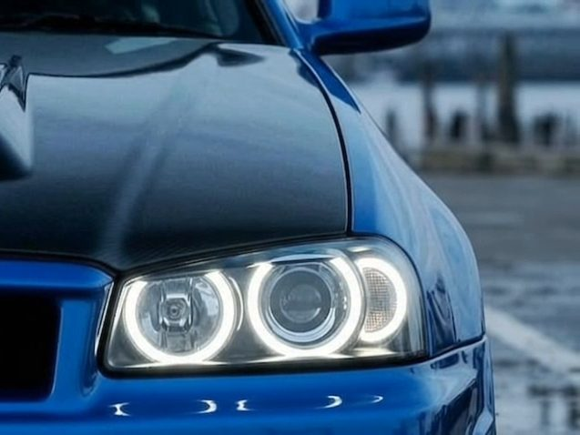
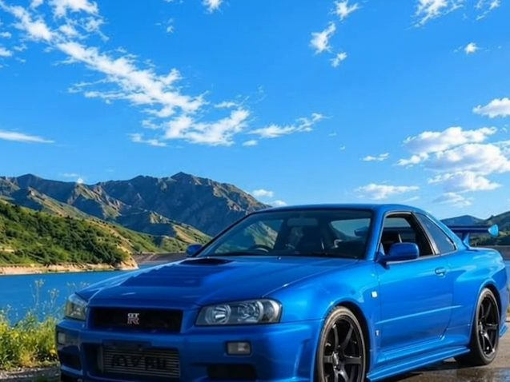
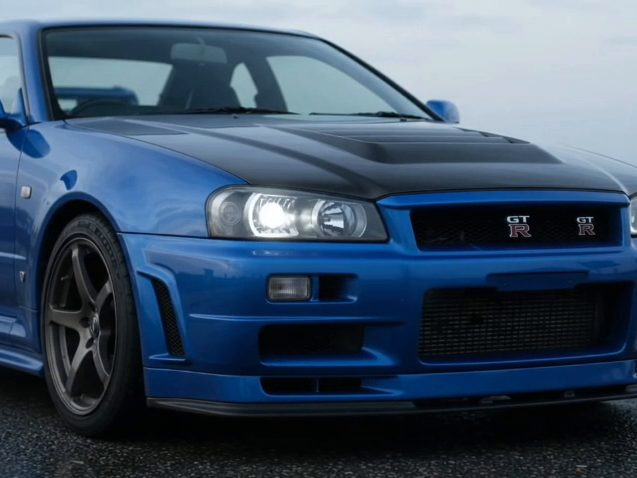
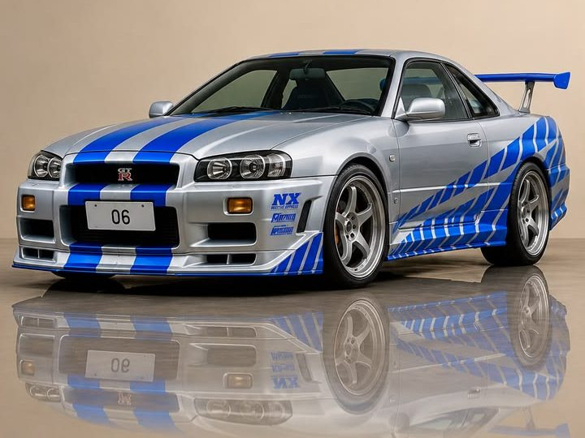

SKYLINEMOTORS
Aluguel de JDM clássico. R34 GT-R Bayside Blue.
Role pra dar a volta de 360°
- Motor RB26DETT: seis cilindros em linha, 2,6 litros e dois turbos. No papel, 280 cv.
- Tração ATTESA E-TS: integral; quando a traseira escorrega, a força vai pra frente.
- Traseira com 4 lanternas redondas.
- Câmbio manual de 6 marchas.
- Cor Bayside Blue, a assinatura do R34 GT-R.
Estúdio 360°
Gire. Aproxime. Escolha a cor.
Cor original do vídeo.
Design
Os olhos acendem primeiro.
Farol redondo, olhar de pista.
É a primeira coisa que aparece no escuro e a primeira coisa que o site mostra. Os dois anéis de luz desenham a frente do R34 antes de o resto aparecer.
Baixo, largo e reto.
Para-choque com entradas de ar, capô com saída de ar e linhas retas do farol até a asa. Um desenho que não mudou de moda em mais de 20 anos.
Engenharia
O que tem embaixo do azul.
- Motor
- RB26DETT6 cilindros em linha
- Cilindrada
- 2.568 cm³2,6 litros
- Alimentação
- 2 turbosbiturbo
- Potência declarada
- 280 cvo número oficial da época
- Tração
- IntegralATTESA E-TS
- Câmbio
- Manual6 marchas
- Rodas
- 18"de fábrica no GT-R
- Produção
- 1999–2002R34 GT-R
Dados de fábrica do Nissan Skyline GT-R R34.
Galeria
Sete ângulos de um R34.
Arraste pro lado e o anel gira. Ou espere, que ele gira sozinho.







Parado ele já chama atenção. Imagina na estrada.
Largada
Agora é com você.
O ronco é de um R34 de verdade. Os tempos são de brincadeira.
- Dê a partida. O som liga junto.
- Segure o botão no 2-step e solte quando acender o verde.
- Toque pra trocar de marcha quando as luzes do painel piscarem.
Recorde de 0 a 200: ainda não tem
- REAÇÃO
- —
- 0–100
- —
- 0–200
- —
Toque em dar a partida. O som liga junto.

Skyline Motors é um conceito. Quem fez foi a GuDev.